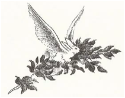

My post tying digital humanities to The New Aesthetic caused a bit of consternation, and forced me to take a closer look at the movement. Matthew Battles gives the best overview that I’ve read so far, and reminds me of my own sense that some of these Internet objects bear a striking resemblance to Cthulhu:
This is off-the-charts otherness, a hyperotherness… and from some quarters there is a yearning, a gnostic peering after some event horizon, a dreamt-of ubiquity or singularity, beyond which machines and human consciousness interpenetrate, some Michelangelesque digital touch-point—all of which Sterling would say is just so much eschatology in the vein of Pierre Teilhard de Chardin. We’re not in fact empathizing with machines; we’re empathizing with screens. And when you consider what’s really going on in the machine, the screen behavior is epiphenomenal.
But understanding The New Aesthetic is less interesting to me at this point than understanding the community around it. In a sense, The New Aesthetic and The Digital Humanities are already united in their dislike of their own label, their dogged insistence that everything that’s being done has been going on since 1982 (or 1949 or 1736). Like our very own Humanist mailing list, the CRUMB New Media Curating list is rife with discontents happily describing the hopeless naivete of anyone who chooses to adopt the term. Like the swallows returning to Capistrano, every Day of DH is accompanied by definitions of the digital humanities followed by the exasperated responses from the very same people bemoaning the foolishness of said definitions and the practice of defining itself. Similarly, the New Aesthetic has been introduced to the world framed almost entirely as an unneeded and inadequate category for a movement that has existed for decades, if not longer. The seriousness of the disdain and its almost machinelike quality reminds me of an old YouTube video that was played out back when Digital History was all the rage.
Sadly, the New Aesthetic’s Wikipedia page is only five days old, unlike my own Digital Humanities Wikipedia page, which celebrated its sixth birthday in January (And this is why January 30th, as we all know, is Digital Humanities Day). There’s no telling if this upstart phenomenon will have the same staying power, but if the New Aesthetic’s pedantic focus on parsing is any indication, it has a bright future.